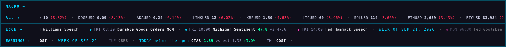
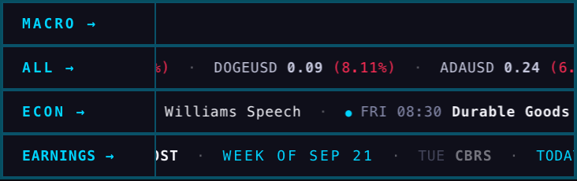
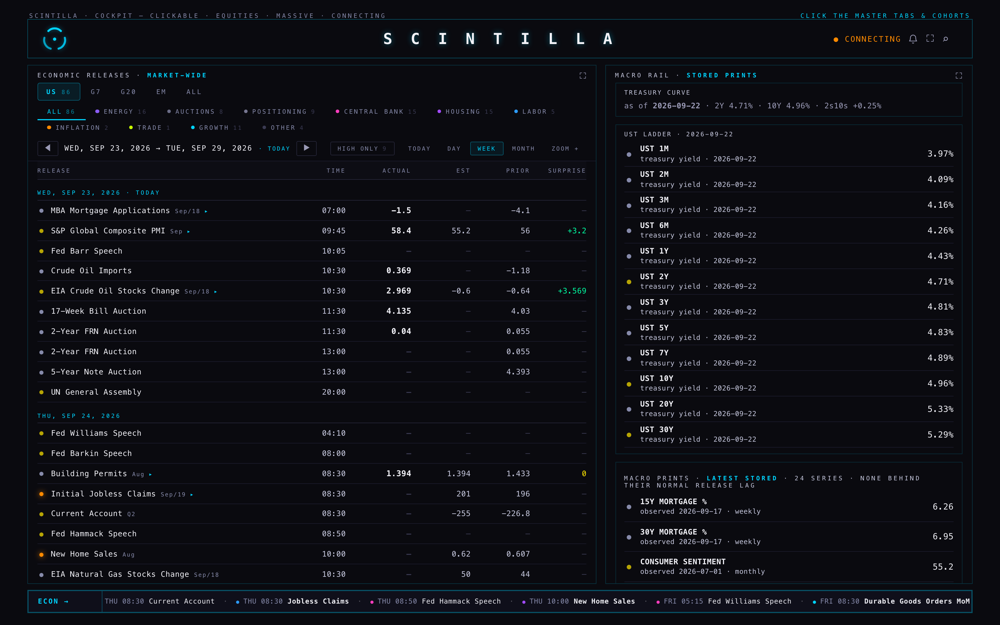
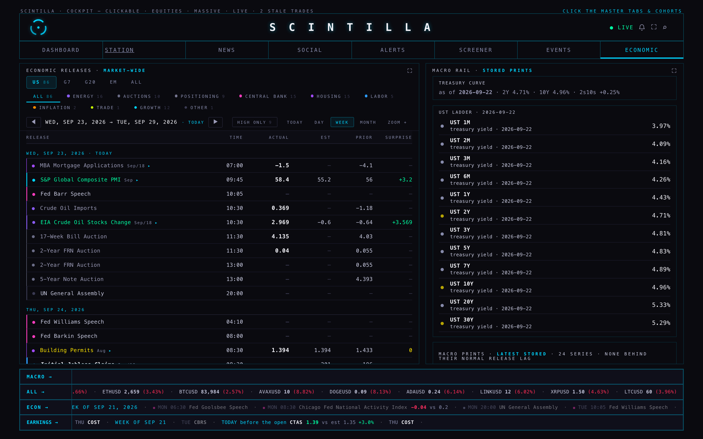
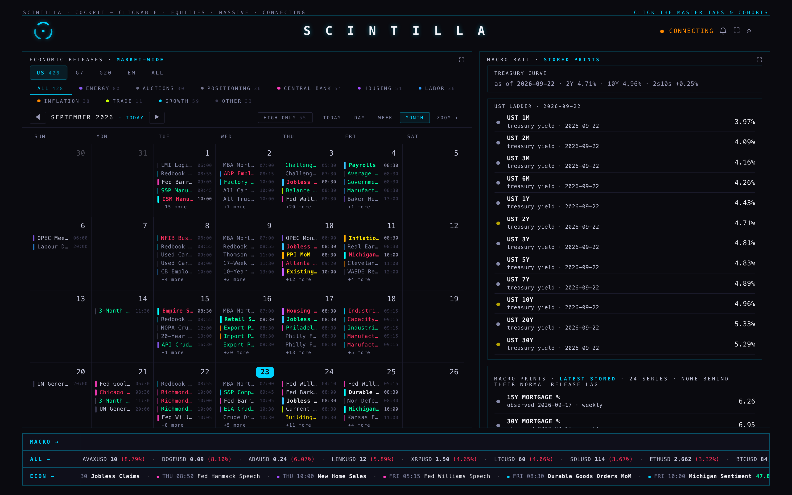
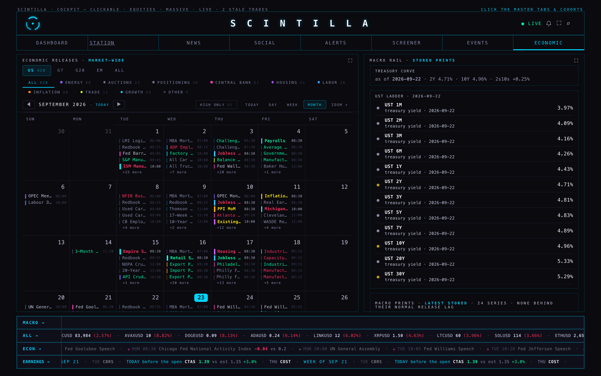
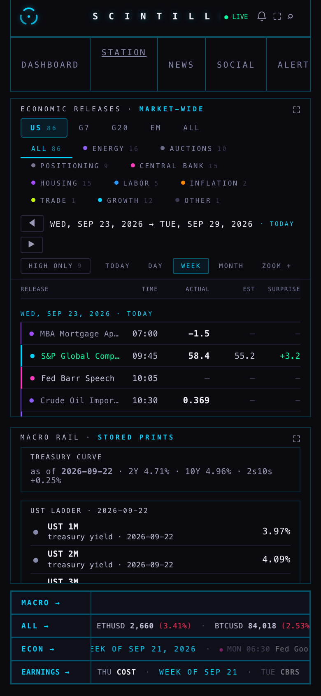
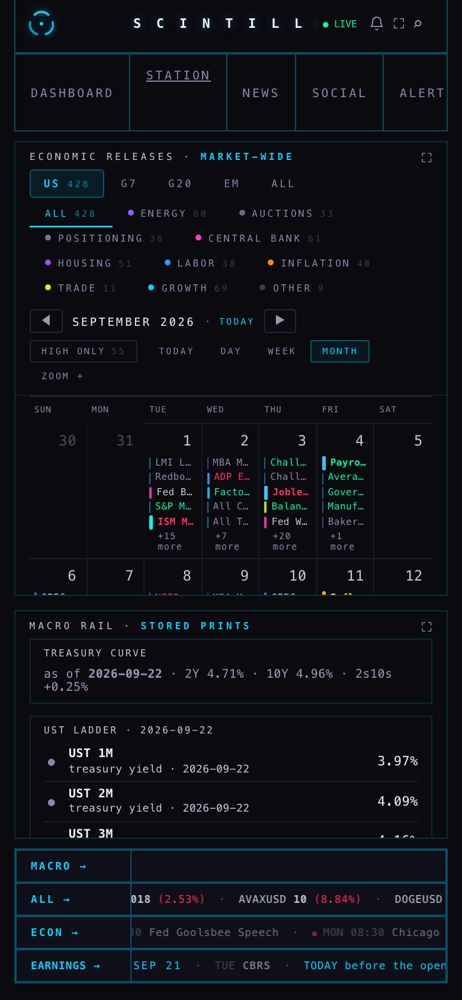

There is now a fourth band under the Hub: EARNINGS, beside ECON, in the same part and at the same speed. It carries this week's earnings for the names the Hub tracks, and once a company has reported it carries the result. Separately, the ECONOMIC tab was checked line by line against the notes from the session that restructured it: most of it matches, two things did not and are fixed, one is a conflict only you can settle. Nothing here is deployed — branch hub/earnings-tape-20260923, built from production 3838dc7.
“I need a tape of the events earnings too at the bottom ticker tape.” — Alan, 23 Sep, 13:00 ET

Reading the EARNINGS line: WEEK OF SEP 21, then TUE CBRS faded because Tuesday has gone, then TODAY · before the open · CTAS 1.39 vs est 1.35 +3.0% with the number and the surprise in green because it beat, then THU COST still to come. That is the real week — three of the 389 names the Hub tracks report between Monday and Sunday, and CTAS reported this morning.

CTAS · WED SEP 23, before the open · EPS 1.39 against an estimate of 1.35 · beat by 2.96% · tap for the company page.earnings_events — the EVENTS room's own table and its own columns, the dates the data audit found right and current — and keeps only the tickers in cohorts, the same universe the EVENTS room filters by.tapeSpeed: EARNINGS 20 s · ECON 107.3 s · the price bands 20 s — the same function, each track's own length, with the 20-second floor the law already had for short tracks.ERN_BAND_ON = false.Asked for “if the Station carries a bottom events tape”. It does not. On production origin/station/merge-20260923 there is no events band anywhere — searching every page for the ECON band's own markup returns nothing — and the deck's bottom row is video · video · X. The Station's ticker/ pane is a price tape (?bands=macro,all), not an events tape. So there was nothing to add the band to, and I did not invent a place for it. If you want one there, say so and it is a small pane change.
| The note | Live tab | What I did |
|---|---|---|
| Three nav rows: regions US · G7 · G20 · EM · ALL | Matches | Nothing — all five, each carrying its own count |
| Category chips, each with its colour dot as the legend | Matches | Nothing — ten chips, each with the hue that category uses |
| Day stepper with DAY · WEEK · MONTH | Matches | Nothing (HIGH ONLY, TODAY and ZOOM + sit in the same group) |
| WEEK is the default landing | Does not match — it lands on MONTH | Left alone on purpose. See section 5: this is a later decision of yours, not a regression. |
| Table: Release / Time / Actual / Est / Prior / Surprise | Matches | Nothing (on a phone the Prior column is dropped for width — deliberate, and already so) |
| Composite releases collapse to one headline row that opens inline (CPI to its nine components) | Matches | Nothing. A family printing at the same minute collapses to its named head with a ▸; clicking opens its components underneath. MEASURED on this September: CPI's 14 rows at 08:30 on the 11th collapse to one headline (Inflation Rate YoY) with 13 components inside it; the weekly CFTC block collapses 11 into one, the EIA block 10. The plan said nine components; the mechanism is the plan's, the count is whatever the supplier files that minute. |
| MONTH is a real calendar: Apple-style grid, Sunday first, date top-right, today badged, neighbouring months greyed | Matches, all five | Nothing |
| The colour law, three channels — kind sets the hue, result sets the name's hue, importance sets weight and never hue | Two of the three were missing | Fixed — section 3 |
| OTHER reads 0: every release has a home; a non-zero is a leak detector | Read 4 on the week, 28 on the month | Fixed — section 4 — now 0 except two kinds of thing that genuinely are not macro releases |






The plan gives each row three separate things to say. Before this branch the row had one hue — the dot — and it carried importance. So “what kind of release is this” had no colour at all, and importance had one the plan says it must never have.
| Channel | Before | Now |
|---|---|---|
| What kind it is | Nothing on the row. The hue existed only on the chips. | The row's spine and its dot, from the very table the chips use as a legend: central bank pink, inflation orange, labor blue, growth cyan, housing purple, trade lime, energy violet, auctions and positioning grey. |
| How it came out | Only the surprise number was coloured. | The release name turns green, yellow or red the moment it prints, the same reading the surprise column uses (hotter inflation or weaker labour is the red one). Nothing else on the row wears those three. |
| How much it matters | The dot's hue. | Weight only: a 1 / 2 / 3 px spine and brighter, heavier text for high impact. |
Measured on the live rows of Wed 23 Sep in this branch: S&P Global Composite PMI — spine rgb(0,212,255) cyan (growth), 2 px, name rgb(0,255,163) green (58.4 against 55.2) · Fed Barr Speech — spine rgb(255,61,190) pink (central bank), 2 px, name plain (nothing printed) · EIA Crude Oil Stocks — spine rgb(139,92,246) violet (energy), name green · 17-Week Bill Auction — spine rgb(106,108,134) grey, 1 px, name dim · Building Permits — name yellow, 1.394 against an estimate of 1.394, exactly in line.
Nothing about the hue or the class can come from the feed: the hue is looked up by the category rule and the weight by a fixed list, and the page's own audit test now proves both with hostile inputs.
OTHER exists so a release with no home is visible. It was not reading 0.
| Window | Rows | OTHER before | OTHER after |
|---|---|---|---|
| US week, 21–27 Sep | 88 | 8 | 3 — all of them the UN General Assembly |
| US month, September | 464 | 29 | 9 |
What was leaking, and where each one belongs now:
What is left in OTHER, and why I did not force it anywhere:
Both would be honest in a ninth spine — say COMMODITIES for the crops and something for scheduled political events — but naming a new category is your call, not mine. Say the word and it is one line each.
Your 13 August notes say WEEK is the default landing. The live tab lands on MONTH. That is not rot: it came from the later session where you sent your iPad calendar and asked for “THE calendar view”, and the repo pins MONTH deliberately in tests/economic-month-zoom.test.mjs. Two of your own decisions disagree, so I changed nothing and wrote the disagreement into a test instead of quietly picking a side. One word from you settles it — if it is WEEK, it is a one-line change plus that test.
live_quotes and in composite_staged at the daily timeframe, and the macro names are not in the second one. That is not from this change and I have not touched it; it is a separate repair if you want it.hub-youtube-age, xfeed-publish) fail identically on the base commit 3838dc7 — they are not from this work.https://scintillahub.ai as an origin, so a page served from a local port cannot fill the price bands. For the strip shots the real upstream answers were fetched outside the browser and handed to the page unchanged, so MACRO and ALL show exactly what production shows. Nothing was faked or edited.Branch hub/earnings-tape-20260923 · base 3838dc7 (origin/hub/econ-pulse-20260923) · not pushed, not deployed, not merged.